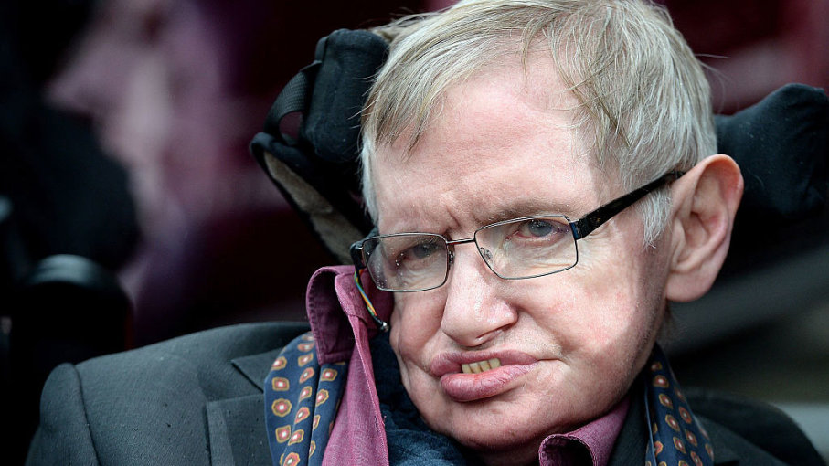

by Anthony
Postado em 1 de Janeiro, de 2019 às 12:00
Stephen William Hawking (Oxford, 8 de janeiro de 1942 — Cambridge, 14 de março de 2018) foi um físico teórico e cosmólogo britânico reconhecido internacionalmente por sua contribuição à ciência, sendo um dos mais renomados cientistas do século. Doutor em cosmologia, foi professor lucasiano emérito na Universidade de Cambridge, um posto que foi ocupado por Isaac Newton, Paul Dirac e Charles Babbage. Foi, pouco antes de falecer, diretor de pesquisa do Departamento de Matemática Aplicada e Física Teórica (DAMTP) e fundador do Centro de Cosmologia Teórica (CTC) da Universidade de Cambridge.
Seus trabalhos científicos incluem um teorema sobre a singularidade gravitacional no âmbito da relatividade geral (em colaboração com Roger Penrose) e a previsão teórica de que os buracos negros emitem radiação, frequentemente chamada de Radiação Hawking. Hawking foi o primeiro cientista a estabelecer uma teoria da cosmologia explicada pela união da teoria geral da relatividade e da mecânica quântica. Ele foi um defensor fervoroso da interpretação de muitos mundos na mecânica quântica. Hawking alcançou sucesso comercial com vários trabalhos nos quais ele discute suas próprias teorias e cosmologia em geral. Seu livro Uma Breve História do Tempo permaneceu na lista de mais vendidos do The Sunday Times durante 237 semanas.
Em 2002, Hawking ficou em 25º lugar na pesquisa da BBC sobre os 100 Maiores Britânicos de todos os tempos. Em 1963, Hawking foi diagnosticado com uma forma de início precoce da doença neuronal motora (MND; também conhecida como esclerose lateral amiotrófica "ALS" ou doença de Lou Gehrig) que o paralisou gradualmente ao longo das décadas. Mesmo após a perda de sua capacidade de falar, ele ainda era capaz de se comunicar por meio de um dispositivo gerador de fala, inicialmente através do uso de um interruptor de mão e, mais tarde, usando um único músculo da bochecha. Ele morreu no 14 de março de 2018, aos 76 anos de idade, depois de lutar contra essa doença durante mais de 50 anos.
Stephen William Hawking nasceu exatamente no aniversário de 300 anos da morte de Galileu. Seus pais eram Frank Hawking, um biólogo pesquisador que trabalhava como parasitólogo no Instituto Nacional de Pesquisa Médica de Londres, e Isabel Hawking. Teve duas irmãs mais novas, Philippa e Mary, e um irmão adotivo, Edward. Hawking sempre foi interessado por ciência. Em sua infância, quando ainda morava em St Albans, estudou na St Albans High School for Girls (garotos de até 10 anos eram educados em escolas para garotas) entre 1950 e 1953, ele foi um bom aluno, mas não era considerado excepcional.
As grandes conquistas da humanidade foram obtidas conversando, e as grandes falhas pela falta de diálogo.